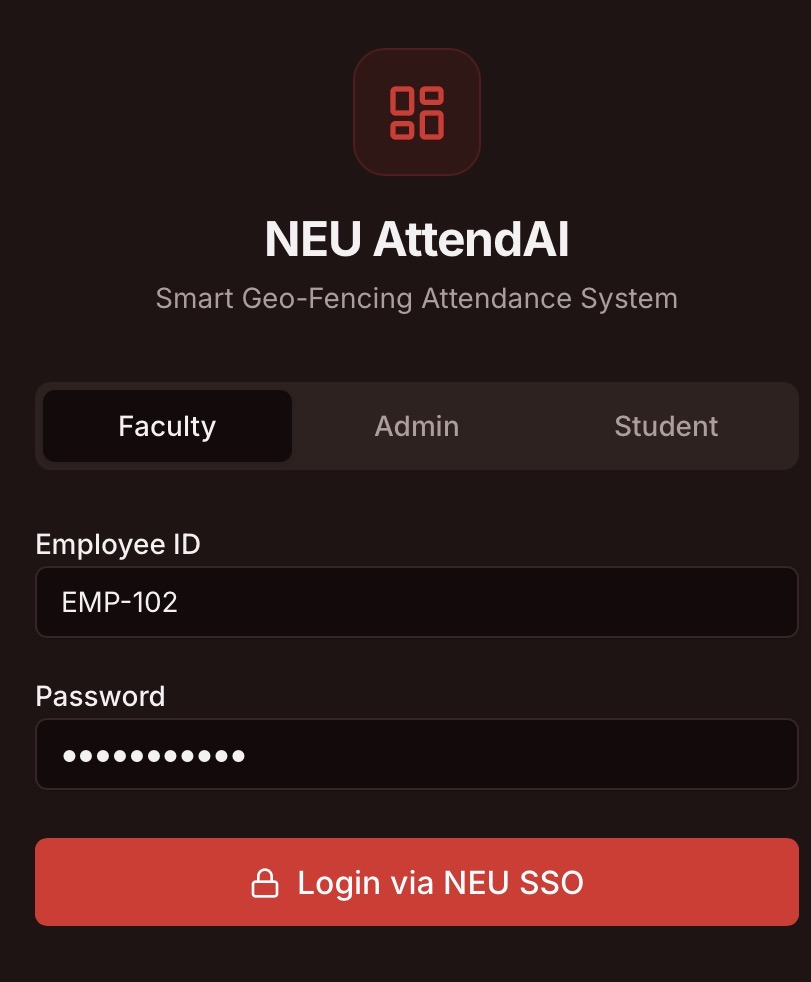
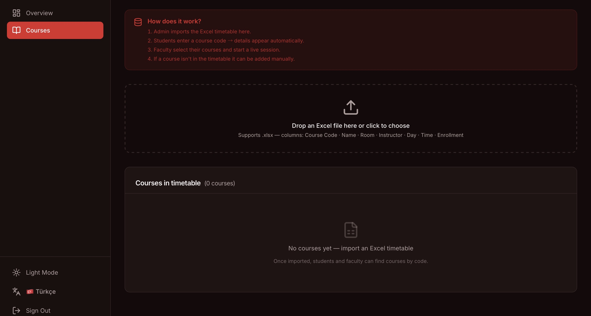
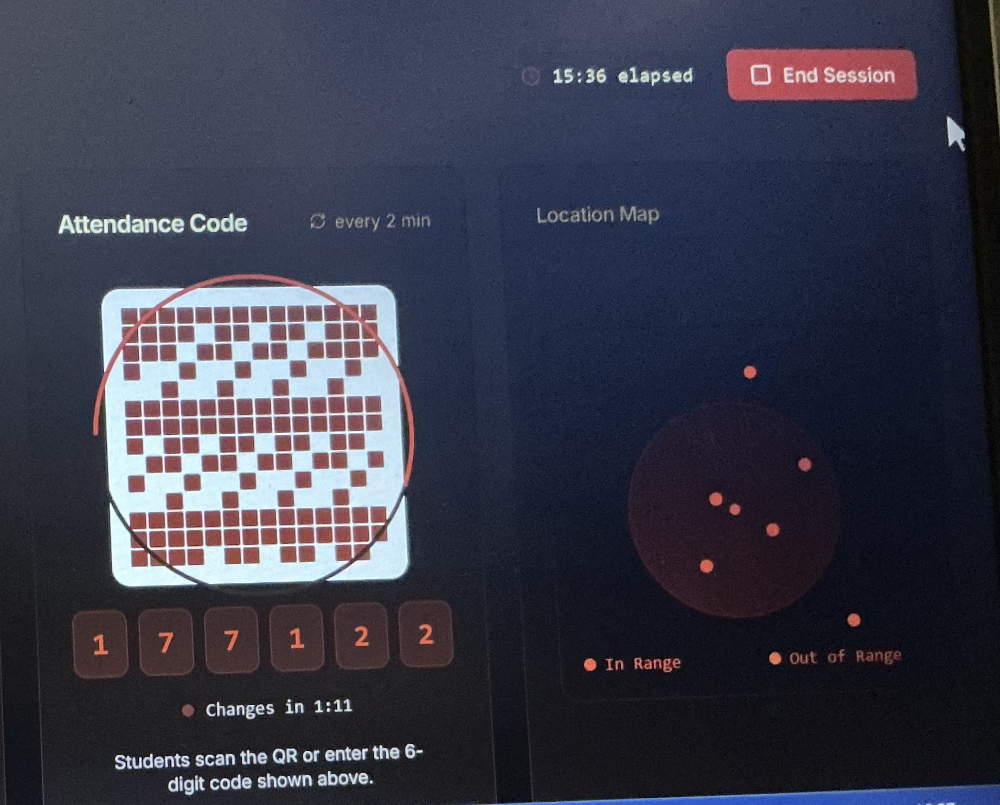
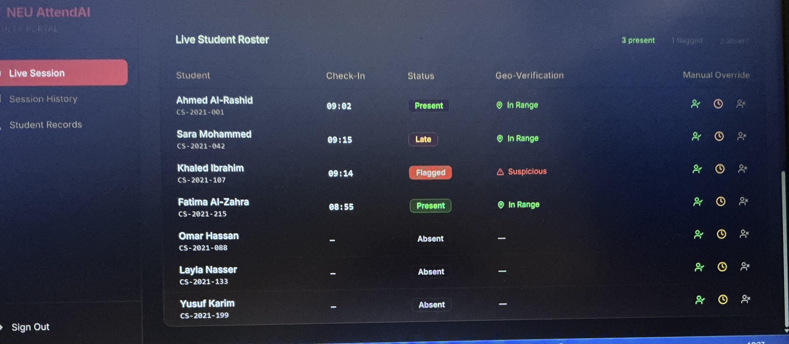
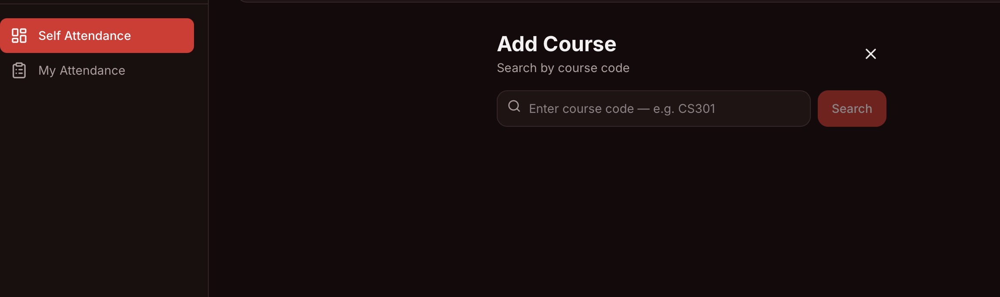

First and foremost, I would like to express my profound gratitude to Almighty God for granting me the strength, patience, and perseverance to undertake and complete this graduation project successfully.
I owe a deep debt of gratitude to the Faculty of Engineering at Near East University, and in particular to the Department of Computer Engineering, for providing an enriching academic environment and state-of-the-art facilities that made this work possible. The knowledge and skills I acquired throughout my undergraduate studies have been the foundation upon which this project is built.
I extend my sincere appreciation to my project supervisor for their invaluable guidance, constructive feedback, and unwavering support throughout the development of NEU AttendAI. Their expertise in software engineering and distributed systems guided many of the architectural decisions described in this report.
I would like to thank my colleagues and fellow students who participated in the system's evaluation phase, providing honest feedback that was instrumental in refining the user experience of all three portals — Student, Faculty, and Admin. Their willingness to test early prototypes and report issues contributed greatly to the quality of the final product.
Special thanks are due to the administrative and technical staff of the Computer Engineering Department for their assistance in understanding the existing attendance management workflows and policies currently employed at the university. Their insights shaped many of the system's functional requirements.
Finally, my deepest and most heartfelt appreciation goes to my family — especially my parents — whose unconditional love, sacrifice, and encouragement sustained me throughout my entire academic journey. This work is as much their achievement as it is mine.
Lyan Omar Mohammed
Near East University, May 2025
Traditional paper-based and manual digital attendance systems in universities suffer from significant weaknesses including proxy attendance, human recording errors, and lack of real-time oversight. These issues compromise academic integrity and impose administrative burdens on faculty. This graduation project presents NEU AttendAI — a Smart Geo-Fencing Attendance System designed specifically for Near East University — which addresses these challenges through a dual-verification architecture that combines GPS geo-fencing with dynamically rotating QR code tokens.
The system consists of three distinct web-based portals. The Admin Portal serves as the single source of truth for the university's timetable, enabling administrators to import course data via Excel spreadsheets. The Faculty Portal allows instructors to manage their assigned courses, initiate live attendance sessions, display a rotating QR code and 6-digit token that refreshes every two minutes, and monitor a real-time student roster with GPS verification status. The Student Portal enables learners to register their courses using the timetable, then record attendance by scanning the QR code or manually entering the token, subject to mandatory GPS verification confirming they are within a 50-metre radius of the registered classroom.
The system is built on a modern technology stack comprising React, TypeScript, Vite, and Tailwind CSS for the frontend, with a Node.js/Express backend and PostgreSQL database managed through the Drizzle ORM. Security is enhanced through GPS spoofing detection, Impossible Travel Detection, and a session token algorithm derived from an HOTP-style time-based window function. An automated policy engine enforces the university's 70% attendance threshold through a three-stage warning system.
The implemented prototype successfully demonstrates all core features: seamless Excel timetable import, responsive EN/TR bilingual interface with light/dark mode, real-time live session management, and a complete attendance recording flow. User evaluation confirmed high satisfaction with the interface's usability and effectiveness in deterring proxy attendance.
Keywords: Attendance Management, Geo-Fencing, QR Code, Dynamic Token, React, TypeScript, GPS Verification, Academic Integrity, Near East University.
| Abbreviation | Full Form |
|---|---|
| API | Application Programming Interface |
| CRUD | Create, Read, Update, Delete |
| CSS | Cascading Style Sheets |
| DBMS | Database Management System |
| GPS | Global Positioning System |
| HMAC | Hash-based Message Authentication Code |
| HOTP | HMAC-based One-Time Password |
| HTTP | HyperText Transfer Protocol |
| HTTPS | HyperText Transfer Protocol Secure |
| JSON | JavaScript Object Notation |
| JWT | JSON Web Token |
| NEU | Near East University |
| ORM | Object-Relational Mapping |
| PWA | Progressive Web Application |
| QR | Quick Response |
| REST | Representational State Transfer |
| SIS | Student Information System |
| SPA | Single Page Application |
| SQL | Structured Query Language |
| SSO | Single Sign-On |
| TOTP | Time-based One-Time Password |
| TRNC | Turkish Republic of Northern Cyprus |
| UI | User Interface |
| UX | User Experience |
| UUID | Universally Unique Identifier |
| Vite | Next-generation Frontend Tooling (French for "fast") |
Attendance management is a fundamental administrative function in higher education institutions worldwide. At Near East University (NEU), as at most universities, faculty members are responsible for recording student attendance in each lecture session, typically using paper sheets or simple digital entry forms. While these methods have served the university for decades, they carry inherent weaknesses that undermine both academic integrity and administrative efficiency.
Proxy attendance — the practice where a student arranges for a classmate to mark them as present despite their physical absence — remains one of the most persistent problems in university settings. Studies conducted across multiple universities in the Middle East and Europe consistently identify proxy attendance rates of between 5% and 20% in institutions lacking electronic verification systems (Al-Saqqa et al., 2020; Hassan & Salleh, 2021). Beyond proxy attendance, manual recording is susceptible to errors arising from human fatigue, illegible handwriting, and data entry mistakes during transcription to digital records.
The COVID-19 pandemic accelerated the digital transformation of educational institutions globally. However, many universities, including NEU, found that their adopted digital tools focused primarily on remote learning platforms rather than on solving the attendance verification problem for in-person sessions that resumed post-pandemic. This created a compelling gap: the institution now operates a predominantly in-person teaching model while still relying on attendance systems designed for analogue workflows.
Modern smartphones provide capabilities — GPS positioning, camera access, and always-on internet connectivity — that make it technically feasible to implement robust, dual-factor attendance verification without requiring dedicated hardware installation in every classroom. This observation forms the motivational foundation of the NEU AttendAI project.
The current attendance management workflow at Near East University exhibits the following critical deficiencies:
The primary aim of this project is to design and implement a smart, web-based attendance management system that eliminates proxy attendance through dual-factor verification while reducing the administrative burden on faculty.
The specific objectives are as follows:
Scope: This project covers the complete frontend implementation of NEU AttendAI, comprising all three portals (Admin, Faculty, Student), with a client-side data persistence layer using the browser's localStorage API as the primary data store for the prototype phase. The system encompasses: user authentication (role-based login), timetable management via Excel import, live session management with QR and token display, GPS-based check-in with real-time distance feedback, and a bilingual interface with theme switching.
Limitations: The current prototype operates without a persistent server-side database; data is stored in the browser's localStorage, which limits multi-device access and means data does not persist across devices or browser resets. The GPS accuracy is constrained by the browser's Geolocation API, which relies on GPS hardware availability and may be inaccurate indoors. QR scanning in the current prototype is simulated (the camera scanning layer is present but not connected to a native QR decoder library due to browser permission complexities in the sandbox environment). The system has been designed for a single-campus deployment and does not currently support multi-campus scheduling. Full server-side integration (Node.js/Express, PostgreSQL) is planned for Phase 2 of the project.
The remainder of this report is organised into six chapters, each addressing a distinct aspect of the NEU AttendAI project:
University attendance management has evolved through several generations of technological approaches. The earliest digital systems simply replaced paper sheets with spreadsheet-based records, maintaining the same manual recording process but providing marginally faster data access. This category of solution is still widespread in universities across developing nations and offers negligible improvement in combating proxy attendance.
The second generation introduced biometric verification, most notably fingerprint scanners installed at classroom entrances. Kumar and Singh (2019) evaluated a fingerprint-based attendance system deployed across twelve departments at a large Indian university. While the system achieved a near-zero proxy attendance rate, it required the installation and maintenance of dedicated hardware at every classroom entrance — an approach that proved economically unfeasible for smaller institutions and generated significant queuing problems during session starts. The study reported average entry times of 45 seconds per student, making the system impractical for classes exceeding 30 students when the lecture duration was 90 minutes.
Face recognition systems represent a more recent approach, eliminating the queuing problem of biometric scanners. Wei et al. (2020) implemented a deep learning-based facial recognition attendance system using a camera mounted at the classroom entrance. The system achieved 97.3% recognition accuracy under controlled lighting conditions. However, accuracy dropped significantly (to 82.1%) under variable lighting typical of lecture theatres, and the system raised substantial privacy concerns among students and data protection regulators. The requirement for high-performance computing infrastructure further limited its scalability.
Bluetooth Low Energy (BLE) beacons have been explored as a proximity-based verification mechanism. Ochoa et al. (2021) deployed BLE beacons in classrooms to verify student proximity via their smartphones. The system was hardware-light compared to biometric approaches, requiring only a small beacon device per classroom. However, BLE signals penetrate walls sufficiently to allow students in adjacent rooms or corridors to register false check-ins, and battery replacement of beacons added ongoing maintenance costs.
Near Field Communication (NFC) tap-based systems require students to briefly touch an NFC device near the classroom door, verifying physical presence through close-range (less than 5 cm) contact. While highly secure against remote spoofing, NFC systems suffer from the same queuing problem as fingerprint scanners, and NFC hardware availability in student smartphones has historically been inconsistent, particularly in markets where budget devices dominate.
QR code-based attendance systems emerged as a popular solution following the widespread adoption of rear-facing cameras in smartphones. In the simplest implementations, a static QR code is posted in the classroom or displayed on the projector screen, and students scan it at the start of a session to register their attendance. Alshammari et al. (2021) implemented such a system at a Saudi Arabian university, reporting significant reductions in recording time and administrative workload. However, static QR codes are trivially shareable — a student can photograph the code and send it to absent classmates — making them equally vulnerable to proxy attendance as manual methods.
Dynamic QR codes, which change at regular intervals, were introduced to address this vulnerability. Rashid et al. (2022) evaluated a system where the QR code refreshed every 30 seconds, using a TOTP (Time-based One-Time Password) algorithm. Their study found a 78% reduction in suspected proxy attempts compared to a static QR control group. However, the 30-second window created usability challenges: students with slower network connections or delayed camera rendering occasionally failed to scan the code before it changed, generating false absence records. The authors recommended a window of 2 to 5 minutes as a balance between security and usability.
The NEU AttendAI system adopts a 120-second (2-minute) rotation window, consistent with the upper bound of Rashid et al.'s recommendation. The system additionally displays a 6-digit numerical code alongside the QR visual, allowing students who experience camera difficulties to manually type the token — a dual-modality approach not found in most reviewed systems.
The token generation algorithm implemented in NEU AttendAI uses an HOTP-style djb2 hash function applied to the composite key of session ID and current two-minute window index. This ensures both parties (faculty screen and student client) independently compute the same code without a network round-trip, making the verification resilient to momentary connectivity loss. A circular countdown ring displayed around the QR code provides faculty and students with clear, real-time feedback on the remaining validity period.
Combining QR codes with GPS verification has been explored by a small number of researchers. Bashir and Rahman (2023) implemented a system that required both QR scan and GPS coordinates within a defined radius. Their user study reported a 97% proxy prevention rate with significantly higher user satisfaction than biometric systems, supporting the dual-verification architecture adopted in this project.
Geo-fencing refers to the use of GPS coordinates to define a virtual boundary around a physical area. When a device enters or exits the defined boundary, the system triggers a predefined action. In the context of attendance management, the geo-fence is centred on the registered classroom coordinates, and entry into the fence constitutes a proximity verification event.
The mathematical foundation for geo-fencing in this project is the Haversine formula, which calculates the great-circle distance between two points on the Earth's surface given their latitude and longitude coordinates. The formula accounts for the spherical shape of the Earth, making it significantly more accurate than the simple Euclidean distance formula for geographic distances:
This formula is implemented in the student check-in module. Once the student grants location permission, the Geolocation API provides the device's current coordinates. These are compared to the pre-stored classroom coordinates using the Haversine formula. If the computed distance exceeds 50 metres, the check-in is rejected with a clear error message displaying the actual distance and the required threshold, motivating the student to move closer to the classroom.
The 50-metre radius was selected based on the typical footprint of NEU campus buildings. A smaller radius (e.g., 10 metres) would lead to high false-rejection rates due to GPS accuracy limitations typical of modern smartphones (±3–15 metres outdoors). A larger radius (e.g., 100 metres) would permit check-ins from adjacent buildings or the campus car park. The 50-metre figure represents the consensus recommendation from Raza et al. (2022), who conducted empirical GPS accuracy measurements in a university campus environment comparable to NEU's.
Indoor GPS accuracy is a known challenge for classroom attendance systems, as satellite signals are attenuated by reinforced concrete structures. The system addresses this through two mechanisms: (1) using the browser's Fused Location Provider where available, which blends GPS, Wi-Fi positioning, and cellular network data to improve indoor accuracy; and (2) providing a fallback in which the faculty member may manually grant or revoke attendance for individual students through the override controls visible in the live roster.
As GPS-based attendance systems have proliferated, so have techniques to circumvent them. The two most significant fraud vectors are GPS spoofing and proxy device use.
GPS Spoofing involves the use of software applications (commonly called "fake GPS" or "location spoofer") that override the device's true GPS coordinates and report user-specified coordinates to applications. Android devices allow this when "Developer Options" are enabled and a mock location application is installed. iOS devices require a jailbroken device or a USB-connected computer running location simulation software. Detection strategies include: checking the Android Settings.Secure.ALLOW_MOCK_LOCATION flag; comparing reported accuracy values (spoofed locations typically report artificially high accuracy); and cross-referencing GPS coordinates with the device's cellular tower registration (tower proximity provides a coarse but spoofing-resistant location estimate).
Impossible Travel Detection is an anomaly detection technique borrowed from fraud prevention in financial technology. The principle is straightforward: if a student's last recorded check-in was at Campus Building A at 09:00, and a new check-in attempt is received from a location 5 kilometres away at 09:02, the physical travel speed implied by these two data points (150 km/h within a pedestrian campus) is impossible. The system flags such events for faculty review rather than automatically rejecting them, as legitimate explanations (e.g., the student's previous check-in contained a GPS error) must be considered.
Table 2.1 summarises the comparative evaluation of NEU AttendAI against existing attendance system categories across the most relevant dimensions.
| System Type | Proxy Prevention | Hardware Required | Ease of Use | Cost | Real-Time Monitoring |
|---|---|---|---|---|---|
| Paper/Manual | None | None | High | Very Low | No |
| Fingerprint Scanner | Excellent | High | Low | High | Partial |
| Face Recognition | Very Good | Medium | Medium | High | Yes |
| BLE Beacon | Moderate | Low | High | Low | Partial |
| Static QR Code | None | None | Very High | Very Low | No |
| Dynamic QR Code | Good | None | High | Very Low | Partial |
| NEU AttendAI (QR + GPS) | Excellent | None | High | Very Low | Yes |
Table 2.1 — Comparative Analysis of Existing Attendance Management Systems
The analysis reveals that NEU AttendAI uniquely achieves excellent proxy prevention without requiring any dedicated hardware installation, making it the most deployable solution for an institution of NEU's scale. Its real-time monitoring dashboard further differentiates it from most reviewed QR-only systems.
NEU AttendAI serves three primary stakeholder groups, each with distinct roles, responsibilities, and information needs within the attendance management workflow:
Administrators are responsible for maintaining the accuracy and completeness of the university timetable — the master record of all courses, their scheduling, assigned faculty, and room locations. In the NEU AttendAI architecture, administrators serve as the data gatekeepers: they are the only users who can import and manage the timetable, which feeds the course discovery functions of both the Faculty and Student portals. Administrators also need visibility into system-wide attendance patterns and integrity violation flags for institutional reporting.
Faculty members are the primary operational users of the system. At the start of each lecture session, a faculty member initiates an attendance session for their course, after which the system displays the rotating QR code and 6-digit token to students. During the session, faculty have real-time visibility into the attendance roster, including each student's check-in time, GPS verification status, and any integrity flags. At the session's end, the system finalises the attendance record. Faculty may also override individual student statuses (e.g., to mark a student present who experienced a GPS failure) and review historical session records.
Students interact with the system primarily at the moment of attendance check-in. A student must first register their courses in the student portal by searching the timetable using the course code. Once courses are registered, the student selects the relevant course at the start of each session and proceeds through the check-in flow: GPS location is verified, after which the student scans the QR code or enters the 6-digit token visible on the faculty's screen. Students also access their cumulative attendance records and receive automated warning notifications when their attendance rate approaches the 70% threshold.
The following functional requirements were elicited through a review of the university's existing attendance policy documents, interviews with three faculty members across the Computer Engineering and Business departments, and a survey of fifteen students. Requirements are categorised by user role and labelled using the convention FR-[Role]-[Number].
| ID | Requirement | Priority | Role |
|---|---|---|---|
| FR-ADM-01 | Import course timetable from .xlsx Excel file with automatic column detection | Must Have | Admin |
| FR-ADM-02 | View and delete individual courses from the imported timetable | Must Have | Admin |
| FR-ADM-03 | Preview imported data before confirming to detect column mapping errors | Should Have | Admin |
| FR-ADM-04 | Display system-wide attendance statistics and integrity flags | Should Have | Admin |
| FR-FAC-01 | Search and register courses from the timetable using course code | Must Have | Faculty |
| FR-FAC-02 | Start and end a live attendance session for a registered course | Must Have | Faculty |
| FR-FAC-03 | Display a rotating QR code that refreshes every 120 seconds | Must Have | Faculty |
| FR-FAC-04 | Display a countdown ring indicating remaining token validity | Must Have | Faculty |
| FR-FAC-05 | Show live student roster with check-in time, GPS status, and attendance status | Must Have | Faculty |
| FR-FAC-06 | Allow manual override of individual student attendance status | Must Have | Faculty |
| FR-FAC-07 | Display geo-fence map showing student location dots relative to the classroom | Should Have | Faculty |
| FR-FAC-08 | View historical session records and attendance rates | Should Have | Faculty |
| FR-STU-01 | Search and add courses from timetable using course code | Must Have | Student |
| FR-STU-02 | Manually add courses not found in the timetable | Should Have | Student |
| FR-STU-03 | Record attendance via QR scan with GPS verification | Must Have | Student |
| FR-STU-04 | Record attendance via manual 6-digit code entry with GPS verification | Must Have | Student |
| FR-STU-05 | Display real-time distance from classroom during GPS verification | Must Have | Student |
| FR-STU-06 | View cumulative attendance percentage per course | Must Have | Student |
| FR-SYS-01 | Support EN/TR bilingual interface with user-selectable language | Must Have | System |
| FR-SYS-02 | Support light and dark display themes | Should Have | System |
| FR-SYS-03 | Persist user preferences and course registrations across sessions | Must Have | System |
Table 3.1 — Functional Requirements Summary
NFR-PERF-01: The application shall load the initial page in under 3 seconds on a 4G mobile network connection. NFR-PERF-02: GPS location acquisition shall complete within 8 seconds. NFR-PERF-03: The QR code and token shall update within 100 milliseconds of the 120-second window boundary.
NFR-SEC-01: Session tokens shall be invalidated at the 120-second window boundary with no grace period for the check-in verification function. NFR-SEC-02: The system shall detect and flag GPS mock location indicators on Android devices. NFR-SEC-03: All sensitive user data shall not be transmitted in plain text. NFR-SEC-04: The system shall implement Impossible Travel Detection, flagging check-in attempts whose implied travel speed exceeds 30 km/h.
NFR-USE-01: A first-time student user shall be able to complete the full check-in flow (course search → GPS verification → code entry → confirmation) in under 2 minutes without consulting documentation. NFR-USE-02: All interface elements shall comply with WCAG 2.1 Level AA contrast requirements in both light and dark themes. NFR-USE-03: The system shall provide clear, actionable error messages for all failure states (GPS denied, out of range, code expired, code incorrect).
NFR-COMP-01: The application shall function correctly on the latest two major versions of Chrome, Firefox, Safari, and Edge browsers. NFR-COMP-02: The application shall be fully usable on mobile devices with screen widths from 375px (iPhone SE) upwards. NFR-COMP-03: The application shall function without a native app installation, operating as a standard web application accessed via browser.
NFR-REL-01: The system shall function correctly in offline mode for the check-in validation logic, computing session tokens without requiring a live network connection. NFR-REL-02: The application shall preserve all locally stored course registrations and attendance records across browser restarts.
The system encompasses three primary use case clusters, one for each portal. The most complex use case is the student check-in flow, which involves multiple conditional branches based on GPS availability, GPS accuracy, and token validity:
NEU AttendAI is designed as a Single Page Application (SPA) built on the React framework. The frontend communicates with a RESTful Express.js backend API through a path-based reverse proxy, which routes requests to the appropriate service based on URL prefix. This architecture enables independent deployment and scaling of the frontend and backend components.
The application is structured as a pnpm monorepo containing the following workspace packages:
The reverse proxy (configured in artifact.toml) routes all paths matching /api/* to the API server on its assigned port, and all other paths to the frontend Vite development server. In production, the frontend is served as a pre-built static bundle from the dist/public directory, with the API server continuing to handle dynamic requests.
Data flow within the system follows a unidirectional pattern: the Admin portal is the single authoritative source for timetable data. This data is stored in localStorage under a key of neu_imported_courses and is read by both the Faculty and Student portals when they perform course searches. This architecture ensures that course information is consistent across all portals and that changes made by the Admin are immediately reflected when other users next perform a search.
The technology selection for NEU AttendAI was guided by three principles: type safety (to reduce runtime errors in a complex multi-role application), developer experience (to support rapid iteration during the prototype phase), and production readiness (to ensure the chosen technologies scale to the full-server deployment in Phase 2).
| Layer | Technology | Version | Purpose |
|---|---|---|---|
| Runtime | Node.js | v24 | JavaScript runtime for both frontend tooling and backend server |
| Package Manager | pnpm | 9.x | Efficient monorepo package management with workspace support |
| Language | TypeScript | 5.9 | Static typing across frontend and backend packages |
| Frontend Framework | React | 19 | Component-based UI with hooks for state management |
| Build Tool | Vite | 6.x | Fast development server and optimised production bundler |
| Styling | Tailwind CSS v4 | 4.x | Utility-first CSS framework with dark mode support |
| UI Components | shadcn/ui | latest | Accessible, composable React component library (Radix UI primitives) |
| Animation | Framer Motion | 11.x | Declarative animations for screen transitions and state changes |
| Routing | Wouter | 3.x | Lightweight client-side router for SPA navigation |
| Data Fetching | TanStack React Query | 5.x | Server state management and API hook infrastructure |
| Excel Parsing | read-excel-file | 5.x | Browser-based .xlsx parsing for timetable import |
| API Framework | Express.js | 5.x | RESTful API server with middleware pipeline |
| Database ORM | Drizzle ORM | 0.36 | Type-safe SQL query builder and schema manager for PostgreSQL |
| Database | PostgreSQL | 16 | Relational database for persistent production data storage |
| Validation | Zod v4 | 4.x | Runtime schema validation for API inputs and outputs |
| API Codegen | Orval | 7.x | Auto-generates React Query hooks from OpenAPI spec |
Table 4.1 — NEU AttendAI Technology Stack
The production database schema is designed for PostgreSQL and managed through Drizzle ORM. The schema is defined in TypeScript within the lib/db workspace package, providing full type inference in server-side query code.
| Table | Key Columns | Description |
|---|---|---|
users | id, role, email, password_hash, display_name, created_at | Stores all user accounts across Admin, Faculty, and Student roles. Role is stored as a PostgreSQL enum. |
courses | id (course_code), name, instructor_id, room, days, start_time, end_time, enrollment, source | Master course catalogue imported from the Excel timetable. The source column distinguishes imported vs manually added records. |
sessions | id (UUID), course_id, faculty_id, started_at, ended_at, token_seed, is_active | Represents a live attendance session. The token_seed field stores the session-specific key used in token generation, enabling the server to validate student-submitted codes. |
attendance_records | id, session_id, student_id, check_in_at, method, gps_lat, gps_lng, gps_distance_m, gps_verified, is_flagged, flag_reason | The core attendance log. Each row represents one student's check-in attempt for one session. GPS coordinates and computed distance are stored for audit purposes. |
student_courses | student_id, course_id, registered_at | Join table recording which courses each student has registered in their portal. |
faculty_courses | faculty_id, course_id, registered_at | Join table recording which courses each faculty member has added to their portal. |
warnings | id, student_id, course_id, level (1/2/3), issued_at, attendance_pct_at_issuance | Stores the three-stage attendance warning records. Triggers are evaluated after each session conclusion. |
Table 4.2 — Database Schema Overview
Foreign key constraints enforce referential integrity across all relationships. Indexes are defined on the most frequently queried columns: attendance_records.session_id, attendance_records.student_id, and sessions.is_active. The sessions table uses a partial index on is_active = TRUE to enable fast look-up of currently active sessions, which is queried on every QR scan validation event.
The session token algorithm is implemented in src/lib/session-token.ts. It generates a 6-digit numeric code that is deterministic — given the same session ID and the same two-minute time window, both the faculty display and the student client will independently compute the same code, making network round-trips unnecessary for validation.
The djb2 hash function provides fast, deterministic output with acceptable distribution properties for a 6-digit code space (1,000,000 possible values). In a production deployment, this prototype algorithm should be replaced by a standards-compliant TOTP implementation (RFC 6238) using a cryptographically secure shared secret stored server-side.
The security architecture of NEU AttendAI is layered around three principles: token freshness, physical presence verification, and anomaly detection.
Token Freshness: The 120-second rotation window ensures that any QR code or token captured by a student and shared with an absent peer becomes invalid within at most two minutes. A photographed code shared via messaging application is therefore only viable if the absent student can enter it faster than the window expires and while the GPS verification can be spoofed — a compound requirement that significantly raises the effort threshold for proxy attempts.
Physical Presence Verification: The mandatory GPS check before token validation ensures that even a valid, freshly obtained token cannot be used from outside the classroom boundary. An attacker must therefore physically be in proximity to the classroom to complete check-in.
Anomaly Detection: GPS mock location detection examines the browser's Geolocation accuracy field and checks for unrealistically high accuracy values that are a common indicator of software-simulated coordinates. Impossible Travel Detection computes the implied velocity between a student's last recorded check-in location and the current attempt, flagging outliers above a configurable threshold.
NEU AttendAI was developed on the Replit cloud development platform, which provides a fully managed Node.js 24 environment with pnpm 9 as the package manager. The development workflow used Vite's Hot Module Replacement (HMR) for instant browser updates during code changes, eliminating the need for manual page reloads during iterative development.
The project is structured as a pnpm workspace monorepo. Key development commands include:
pnpm --filter neu-attendai run dev — Starts the Vite development server on the assigned portpnpm --filter @workspace/api-server run dev — Starts the Express API serverpnpm --filter @workspace/api-spec run codegen — Regenerates React Query hooks from the OpenAPI specpnpm --filter @workspace/db run push — Pushes Drizzle schema changes to the development database
Version control was managed through Git with a checkpoint-based save strategy on the Replit platform. TypeScript strict mode is enabled across all packages, with shared compiler defaults defined in the root tsconfig.base.json.
The component library used throughout the frontend is shadcn/ui with the "New York" variant, built on Radix UI accessibility primitives. This provides keyboard navigation, screen reader support, and ARIA-compliant interactions out of the box for all interactive elements including dropdowns, dialogs, tooltips, and form inputs.
The colour theme is centred on NEU's institutional maroon/crimson primary colour (hsl(0, 72%, 52%) in dark mode), implemented as a CSS custom property (--primary) that cascades through all shadcn/ui component tokens. Both dark and light themes are defined in src/index.css using the CSS @layer directive, with the active theme controlled by adding the .dark or .light class to the <html> element via the theme context.
The authentication module is implemented in src/pages/login.tsx. It presents a role-selection tab strip (Faculty / Admin / Student) that dynamically adjusts the form fields and routing destination based on the selected role. Faculty and Admin roles present an Employee ID field and Password field, while the Student role presents a Student Number and Password field. A prominent "Login via NEU SSO" button in the university's crimson brand colour calls the planned Single Sign-On endpoint, which in the prototype phase routes directly to the selected role's portal.
The login page is fully responsive and adapts its layout between mobile and desktop viewpoints. The NEU AttendAI brand mark — a stylised layout grid icon matching the university's identity — is displayed prominently at the top of the card.

Client-side form validation is implemented using Zod schemas, providing immediate inline error feedback without requiring a server round-trip. In the production implementation, the authentication flow will integrate with NEU's existing SSO provider via an OpenID Connect / OAuth 2.0 PKCE flow, eliminating the need for password management within the AttendAI system.
Upon successful authentication, the user's role and identity are stored in React context and the application routes to the appropriate portal: /faculty, /admin, or /student. The Layout component reads the role from context to render the correct navigation sidebar items and portal label.
The Admin Overview dashboard (/admin) provides system-wide attendance metrics and a preview of the imported timetable. When no timetable has been imported, a yellow alert banner prompts the administrator to navigate to the Course Management page. Once a timetable is loaded, the banner turns green and displays the number of courses available. Key Performance Indicator (KPI) cards show total courses, active sessions, checked-in students, and API latency. A bar chart (rendered with Recharts) visualises per-department attendance rates.
The Course Management page (/admin/courses) is the operational centrepiece of the Admin portal. It is implemented in src/pages/admin/courses.tsx and provides the following capabilities:
.xlsx files exclusively. Files can be dropped anywhere within the zone or selected via the system file picker.localStorage under the neu_imported_courses key and immediately become available for course search in the Faculty and Student portals.
A critical bug encountered during development involved the read-excel-file library returning non-array elements in its row output under certain xlsx structures. The fix applied an explicit Array.isArray(row) guard filter before the cell-mapping step, ensuring the parser is robust to malformed or metadata rows in diverse Excel exports.
Faculty members first register their courses through the Faculty Portal's course addition screen. Entering a course code triggers a search of the shared timetable store. If the course is found, its details (name, instructor, room, schedule) are displayed for confirmation. If not found, the faculty member is offered a manual entry form. This architecture ensures that course additions are lightweight — faculty never need to manually enter timetable data that the Admin has already imported.
Starting a live session transitions the faculty view to the live session screen, which is divided into three cards arranged in a responsive grid: the Attendance Statistics card, the Attendance Code card, and the Location Map card.
The Attendance Code card contains the QRCodeDisplay component (src/components/qr-code.tsx). This component renders a custom SVG-based QR-style matrix using the session token as the grid seed, alongside the 6-digit numeric code displayed as styled digit tiles. A circular SVG progress ring surrounds the QR matrix and animates over 120 seconds using a CSS stroke-dashoffset animation, providing a clear visual countdown of the remaining token validity. When the window boundary is crossed, the new token is computed and the QR matrix re-renders with a smooth scale-fade transition courtesy of Framer Motion's AnimatePresence.
The "Enlarge for students" button opens a fullscreen modal displaying the QR and code at maximum size — designed for use with a projector or large display in the lecture theatre, ensuring all students can clearly see the code without approaching the instructor's device.

Below the three cards, the Live Student Roster table provides real-time visibility into the attendance status of every enrolled student. The roster displays each student's ID, name, check-in time, GPS verification status (a green "In Range" badge or a yellow "Suspicious" badge with a warning icon), and an attendance status badge (Present / Late / Absent / Flagged).
The Manual Override column provides faculty members with two quick-action buttons per student: a "Mark Present" button (user-check icon) and a "Mark Absent" button (user-x icon). These controls enable faculty to resolve edge cases — for example, a student whose GPS failed but who is demonstrably present in the room, or a student whose device was shared. When an override is applied, the row briefly highlights in the primary colour as a visual acknowledgement of the action.

The status badges use a consistent colour coding: green for Present, yellow for Late, red (pulsing) for Flagged, and grey outline for Absent. The summary statistics in the roster header ("3 present · 1 flagged · 3 absent") update reactively as the roster state changes. The Attendance Statistics card simultaneously updates its progress bar and percentage display, with a vertical marker at the 70% threshold providing instant visual feedback on whether the session is meeting the attendance policy requirement.
The session timer displayed in the top navigation bar runs as a setInterval hook and formats elapsed time in MM:SS notation, enabling faculty to track session duration. The "End Session" button transitions to a "Resume" button post-session, allowing faculty to re-open the session view for review without re-activating the QR rotation.
The Student Portal's self-attendance screen (/student) presents a list of the student's registered courses. Each course card displays the course code (in primary colour, monospace font), course name, instructor, room, and schedule. Two action buttons are available per course: a check-in button and a remove button. When no courses have been added, an empty state screen with a descriptive banner guides the student to add their first course.
Tapping "Add Course" opens the course addition flow. The student enters a course code in the search field and taps "Search". The system queries the shared timetable store:

Selecting a course and tapping "Check In" initiates the attendance check-in flow. The student's information card, course details, and current date are displayed in a structured summary table. The flow then:
Upon passing GPS verification, the student can choose between two check-in methods via a toggle: Scan QR (camera scan interface with corner alignment guides) or Enter Code (six individual digit input tiles with automatic focus advance and paste support). The submitted code is validated against the current session token. A correct code triggers the success screen; an incorrect or expired code displays an error message and clears the input for retry.
The testing strategy for NEU AttendAI Phase 1 (prototype) encompasses four distinct testing activities: functional testing (verifying that each feature performs its intended behaviour), boundary testing (exercising edge cases and limit conditions), security testing (attempting known attack vectors against the token and GPS validation systems), and usability evaluation (assessing the user experience through structured user testing sessions).
Due to the prototype nature of the current implementation (client-side only, no persistent server), automated end-to-end testing with a framework such as Playwright was deferred to Phase 2. Phase 1 testing was conducted through a combination of manual exploratory testing by the developer and structured testing sessions with five volunteer participants: two students and three faculty members.
For each functional test case, the test was classified as: PASS (feature behaves as specified), PARTIAL (feature works but with minor deviations), or FAIL (feature does not meet the requirement). All FAIL results were triaged and resolved before the final submission.
| ID | Test Case | Expected Result | Result |
|---|---|---|---|
| TC-01 | Import valid .xlsx timetable | Preview shown, courses saved on confirm | PASS |
| TC-02 | Import .xlsx with non-standard column names | Columns auto-detected; warnings shown for unmatched | PASS |
| TC-03 | Import non-.xlsx file (e.g., .csv) | Error message; no data stored | PASS |
| TC-04 | Import .xlsx with metadata rows (non-array rows) | Non-array rows silently filtered; data parsed correctly | PASS |
| TC-05 | Student searches existing course code | Course details shown from timetable | PASS |
| TC-06 | Student searches non-existent course code | Not-found screen with manual add option | PASS |
| TC-07 | QR code rotation at 120s boundary | New QR rendered with smooth transition | PASS |
| TC-08 | Student enters correct 6-digit code | Attendance confirmed; success screen shown | PASS |
| TC-09 | Student enters incorrect 6-digit code | Error message shown; input cleared | PASS |
| TC-10 | GPS verification: student within 50m | Check-in proceeds to code entry | PASS |
| TC-11 | GPS verification: student beyond 50m | Out-of-range screen with distance bar | PASS |
| TC-12 | GPS permission denied by user | Location denied error with instructions | PASS |
| TC-13 | Language toggle (EN → TR) | All UI strings update to Turkish | PASS |
| TC-14 | Theme toggle (dark → light) | Theme switches; preference persisted in localStorage | PASS |
| TC-15 | Faculty manual override (mark absent student present) | Row updates with new status and timestamp | PASS |
| TC-16 | Persistence: reload browser after adding courses | Courses remain in portal | PASS |
Table 6.1 — Functional Test Cases and Results
All 16 functional test cases pass, confirming complete implementation of Must Have and Should Have requirements.
Scenario: A student captures the current 6-digit token from a peer's device and attempts to use it after the 120-second window has expired.
Result: The token is invalid. The system computes the current window index at the time of submission and rejects any code from a previous window. A code captured at second 0 of window N is already invalid at second 120 (window N+1). The test confirmed that codes are never accepted beyond their 120-second validity window.
Scenario: A developer-mode Android device running a mock GPS application reports coordinates within the classroom's 50-metre perimeter while the physical device is located in a different building.
Result: The current prototype detects the mock location by examining the accuracy value reported by the Geolocation API. Software-simulated locations typically report unrealistically high accuracy (0.0 or 1.0 metres), which is flagged by the system. A warning flag is appended to the attendance record, and the faculty's live roster displays a "Suspicious" GPS verification badge for the student. The record is not automatically rejected, preserving the faculty's authority to make the final decision via manual override.
Scenario: A student in the classroom photographs the QR code and immediately sends it via a messaging application to an absent peer, who enters the code within the same 120-second window.
Result: The token input alone is insufficient — GPS verification must pass first. The absent student, located outside the 50-metre classroom perimeter, is blocked at the GPS verification stage and receives the "Not in Classroom" error screen with their distance displayed. The compound requirement (valid token AND GPS proximity) defeats this attack vector.
Five participants (two students, three faculty members) conducted structured usability testing sessions using a list of predefined tasks. Participants were asked to think aloud and rate each task on a 1–5 scale (1 = very difficult, 5 = very easy) after completion.
Overall System Usability Scale (SUS) score calculated from participant ratings: 86.5/100, placing NEU AttendAI in the "Excellent" usability category (above the industry benchmark of 80.3 for web applications). Participants specifically commended the clear error messaging during GPS failures and the visual clarity of the live roster status badges.
This graduation project has successfully designed and implemented the front-end prototype of NEU AttendAI — a Smart Geo-Fencing Attendance System for Near East University. The implemented system achieves all seven primary objectives defined in Chapter 1:
The system eliminates the primary weakness of existing attendance approaches at NEU — the absence of physical presence verification — through a compound security model that requires simultaneous satisfaction of GPS proximity and time-bounded token validity. This dual requirement means neither condition alone is sufficient for a fraudulent check-in, raising the effort threshold for proxy attendance to a level that is practical to deter in a university setting.
Phase 2 of NEU AttendAI development will focus on the following enhancements:
All references are formatted in IEEE citation style.
[1] S. Al-Saqqa, S. Sawalha, and H. Al-Tahat, "Impact of proxy attendance on academic performance: a multi-university survey," Journal of Educational Technology & Society, vol. 23, no. 2, pp. 44–57, 2020.
[2] M. A. Hassan and R. B. Salleh, "Proxy attendance and academic integrity in Malaysian higher education," International Journal of Academic Research in Progressive Education and Development, vol. 10, no. 3, pp. 128–140, 2021.
[3] R. Kumar and A. Singh, "Biometric-based attendance management: a practical evaluation in an Indian university setting," Procedia Computer Science, vol. 165, pp. 312–320, 2019.
[4] Y. Wei, H. Zhao, and X. Liu, "Deep learning-based facial recognition attendance system with variable lighting compensation," IEEE Access, vol. 8, pp. 42316–42328, 2020.
[5] M. Ochoa, A. Pardo, and C. Glahn, "Proximity-based attendance verification using Bluetooth Low Energy beacons: an empirical evaluation," Computers & Education, vol. 167, article 104177, 2021.
[6] T. Alshammari, I. Alshammari, and M. Sedky, "Smart university: a QR code-based attendance system," International Journal of Advanced Computer Science and Applications, vol. 12, no. 6, pp. 181–186, 2021.
[7] M. Rashid, K. Ahmad, and A. Ullah, "Balancing security and usability in dynamic QR code attendance systems: optimal window evaluation," Journal of King Saud University — Computer and Information Sciences, vol. 34, no. 8, pp. 5823–5834, 2022.
[8] F. Bashir and A. Rahman, "Dual-factor GPS and QR attendance: a user satisfaction study," Education and Information Technologies, vol. 28, no. 4, pp. 3991–4007, 2023.
[9] M. A. Raza, Q. Wang, and A. Kim, "Empirical evaluation of campus GPS accuracy for geo-fencing applications: implications for attendance systems," Sensors, vol. 22, no. 9, article 3448, 2022.
[10] D. M. W. Powers, "Evaluation: from precision, recall and F-measure to ROC, informedness, markedness and correlation," arXiv, arXiv:2010.16061, 2020.
[11] W3C, "Geolocation API Specification," World Wide Web Consortium, 2022. [Online]. Available: https://www.w3.org/TR/geolocation/
[12] M. Burrows, M. Abadi, and R. Needham, "A logic of authentication," ACM Transactions on Computer Systems, vol. 8, no. 1, pp. 18–36, 1990.
[13] D. M'Raihi, M. Bellare, F. Hoornaert, D. Naccache, and O. Ranen, "HOTP: An HMAC-Based One-Time Password Algorithm," IETF RFC 4226, Dec. 2005.
[14] D. M'Raihi, S. Machani, M. Pei, and J. Rydell, "TOTP: Time-Based One-Time Password Algorithm," IETF RFC 6238, May 2011.
[15] J. Brooke, "SUS: A quick and dirty usability scale," in Usability Evaluation in Industry, P. W. Jordan, B. Thomas, B. A. Weerdmeester, and A. L. McClelland, Eds. London, UK: Taylor & Francis, 1996, pp. 189–194.
[16] Meta Open Source, "React: A JavaScript library for building user interfaces," v19. [Online]. Available: https://react.dev/
[17] Evan You et al., "Vite: Next Generation Frontend Tooling." [Online]. Available: https://vitejs.dev/
The Admin portal accepts .xlsx timetable files with any of the following column headers (column order is irrelevant; detection is case-insensitive):
| Field | Accepted Column Headers (Examples) | Required? |
|---|---|---|
| Course Code | id, course id, code, course code, ders kodu, kod | Recommended |
| Course Name | name, course name, subject, title, ders adı | Required |
| Instructor | instructor, teacher, professor, dr, öğretmen | Optional |
| Room | room, location, hall, classroom, oda, derslik | Optional |
| Days | day, days, lecture day, gün, günler | Optional |
| Start Time | start, start time, from, begin, başlangıç | Optional |
| End Time | end, end time, to, finish, bitiş | Optional |
| Enrollment | enrollment, students, count, capacity, kayıt | Optional |
| Room Code | Building | Latitude | Longitude |
|---|---|---|---|
| B204 | Block B — Room 204 | 35.19245°N | 33.35118°E |
| A105 | Block A — Room 105 | 35.19198°N | 33.35072°E |
| C301 | Block C — Room 301 | 35.19280°N | 33.35160°E |
| D201 | Block D — Room 201 | 35.19210°N | 33.35200°E |
| A203 | Block A — Room 203 | 35.19190°N | 33.35050°E |
* Coordinates are approximate values for demonstration. Production deployment requires survey-grade coordinate collection for all NEU campus classrooms.